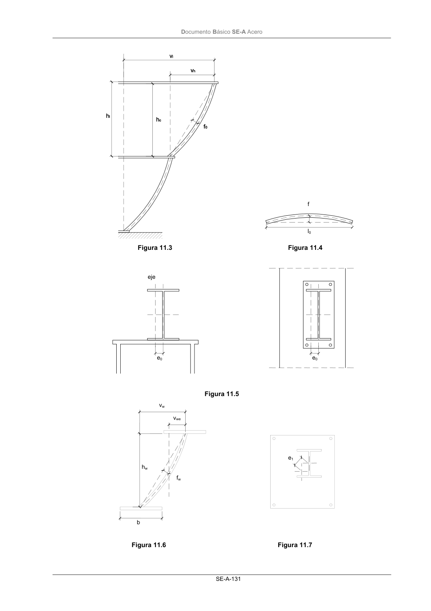
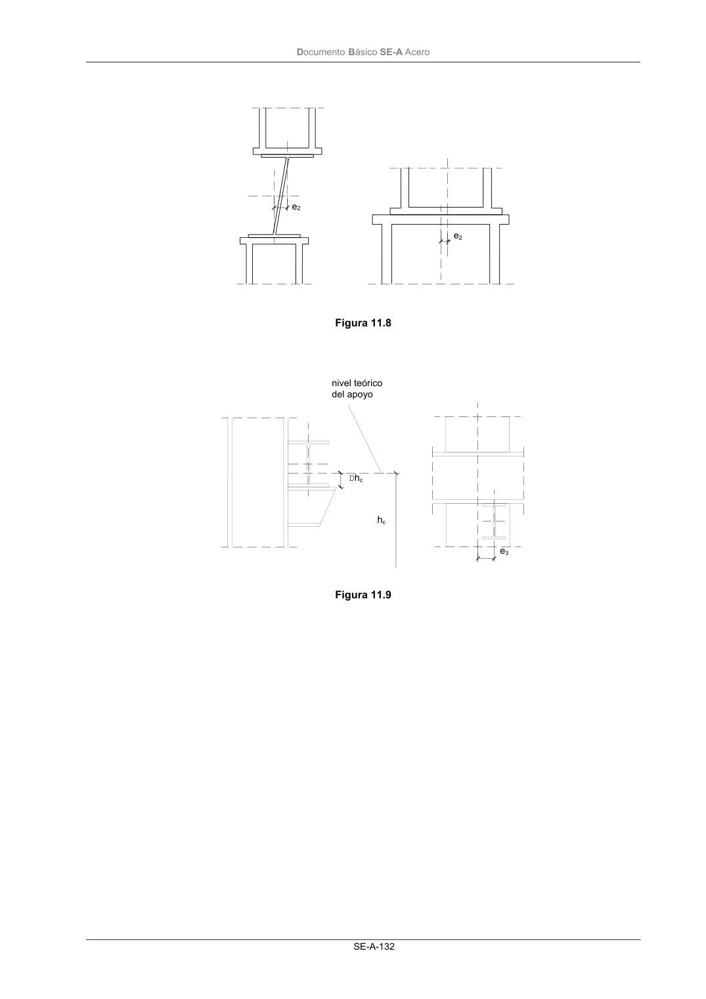

DB-SE-A · 11.2 Tolerancias de ejecución · versión 2007-10-23 · capa oficial
Formatos: JSON compacto · Markdown · PDF fuente
Ámbito del documento · texto del ámbito · documento y tablas
ID técnico a0198 · PDF pág. 131-135 · jerarquía no validada por persona · contrastado con el literal de la página 131 (candidato tipográfico); no validado por persona · padre: raíz
11.2 Tolerancias de ejecución Descripción Símbolo tolerancia Figura Observaciones Dimensiones totales del con- junto del edificio ∆l ±20 mm para l ≤30 m ±(20 + 0,25 (l-30)) mm para 30 m < l < 210 m 11.1 11.2 Para la altura del edificio, reemplazar l por h Nivel superior del plano del piso ∆h1 ±5 mm 11.2 En el caso de elementos de forjado en que no exista margen para la ni- velación de las desviaciones con re- lación a la altura nominal, puede ser adecuado especificar ∆h1 = +0 mm / -10 mm Desviación en inclinación de los pilares: a) entre forjados (distancia hc) b) máxima desviación de la directriz Vh Vl 0,0035 hl 0,0035 (∑ hl) 3/(n+2) 11.3 La tolerancia máxima en el piso “n” depende de la altura hl y del número n de pisos Flecha del pilar entre forjados consecutivos (altura hc) f0 0,015 hl 11.3 Flecha lateral de una viga (luz lb) f 0,0015 lb ≤ 40 mm 11.4 En el caso de vigas que soporten lo- sas prefabricadas de hormigón, la al- tura mínima de apoyo debe respe- tarse (véase también ∆lb) Excentricidad no intencionada del apoyo de una viga e0 5 mm 11.5 Distancia entre pilares adya- centes de cualquier sección ∆ls ± 15 mm 11.1 Distancia entre vigas adya- centes de cualquier sección ∆lt ± 20 mm 11.2 Vigas y pilares soldados: - flecha local del alma entre las alas superior e inferior - inclinación del alma entre las alas - excentricidad del alma con relación al centro de una de las alas fw vw vwe hw /150 hw /75 b / 40 11.6 hw= altura del alma b= ancho del ala El valor fw se refiere a la deformación total del alma Las deformaciones locales no deben sobrepasar fw = 6 mm en 1000 mm de longitud Partes unidas a una viga o un pilar e1 5 mm en cualquier di- rección 11.7 Ejemplo: cubrejuntas, placas de ba- se Base de un pilar con relación al eje vertical que pasa por la ca- beza del pilar inferior e2 5 mm en cualquier di- rección 11.8 En geometrías intencionalmente in- clinadas, eje según dirección de pro- yecto. Cubrejuntas adyacentes de una viga e1 5 mm en cualquier di- rección - Nivel de las superficies de apoyo de las vigas ∆hc + 0 mm - 10 mm 11.9 Posición de las superficies de apoyo a los pilares e3 ± 5 mm 11.9 Falta de planeidad de placas en el caso de superficies de contacto. - 1 mm sobre una longi- tud de 300 mm - Flecha de pilares o de vigas f 0,001 hl , o 0,001 lb 11.3 11.4 DocumentoBásico SE-A Acero SE-A-130 Descripción Símbolo tolerancia Figura Observaciones Longitud de componentes pre- fabricados a intercalar entre otros componentes ∆lb, ∆lc + 0 - 5 mm 11.1 11.2 Figura 11.1 Figura 11.2 ls + ∆ls ls + ∆ls lb + ∆lb ls distancia entre pilares ∆ls desviación de la distancia entre pilares l longitud de carrera (total de vigas) ∆l desviación de la longitud de carrera lb longitud de la viga ∆lb desviación de la longitud de la viga h1 + ∆h1 hc + ∆hc l1 + ∆l1 h1 nivel de la cara superior de una losa de piso apoyada en el pilar ∆h1 desviación con respecto a h1 hc longitud del pilar con sus componen- tes intermedios ∆hc desviación con respecto a hc l1 distancia entre vigas adyacentes ∆l1 desviación con respecto a l1 h + ∆h l + ∆l DocumentoBásico SE-A Acero SE-A-131 Figura 11.3 Figura 11.4 Figura 11.5 Figura 11.6 Figura 11.7 f l0 eje e0 e0 b hw fw vw vwe e1 DocumentoBásico SE-A Acero SE-A-132 Figura 11.8 Figura 11.9 e2 e2 e3 hc Dhc nivel teórico del apoyo DocumentoBásico SE-A Acero SE-A-133



PDF fuente redistribuible: copia fiel enlazada en esta página (SHA256 verificado).